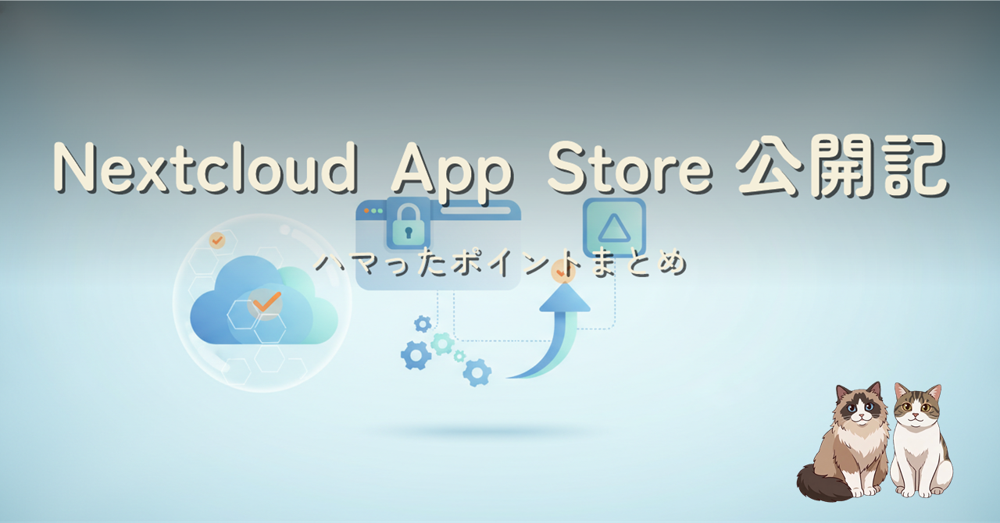
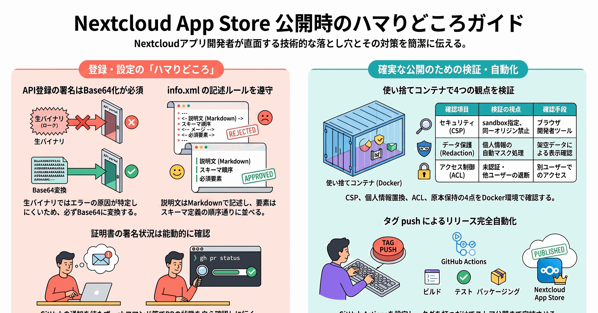
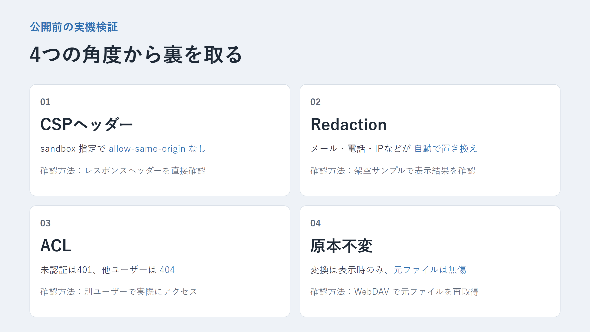
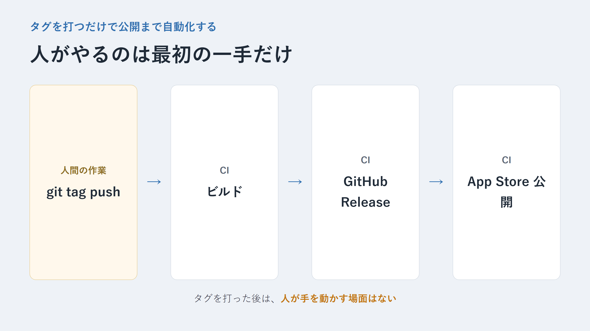

Nextcloud 上の HTML ファイルを安全にプレビューするアプリを作り、Nextcloud App Store に公開しました。証明書申請、アプリ登録 API、description の記法、実機検証と、公開までの一連の手順でハマったポイントをまとめています。
個人 OSS の Nextcloud アプリ「Safe HTML Viewer」を Nextcloud App Store に公開するまでの記録です。証明書申請から、アプリ登録 API の signature が base64 化必須だったこと、description が HTML ではなく Markdown 記法だったこと、実機検証を使い捨て Docker コンテナで行ったこと、タグを打つだけで公開まで自動化する CI の組み方までをまとめました。

